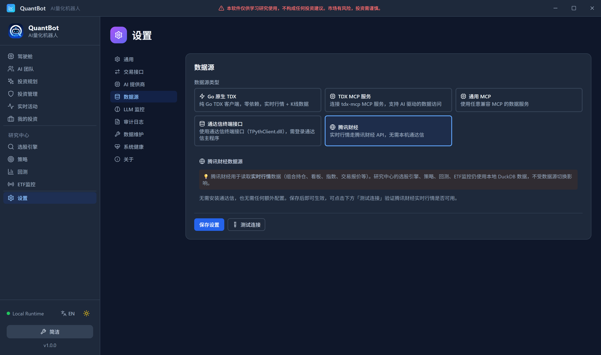

第二十五章先把米下锅：数据维护的正确顺序
25.1我急着选股，系统却问我“米呢”
装好、配好、连好之后，我做的第一件事是点开选股页，想看看这台机器到底能挑出什么股票。 界面上弹出一句话，短短几个字，但把我卡住了：行情数据库(stock.duckdb)未挂载
25.2下厨之前，先想清楚备料的次序
你一定见过这种场面：火已经开了，油已经热了，主料还在冰箱里没解冻。
先把米淘好、把菜洗净切好、把调料摆到手边，然后才开火。你要做的是“青椒炒肉”，结果肉还没解冻就下了青椒，那盘菜的名字就应该改成“糊青椒”。
数据维护就是这样一桌备料。行情是米，复权因子是盐，交易日历是灶上的火候表，财务数据是配菜，盘口摘要是出锅前那一勺明油。它们各有用处，而且有先后。把复权因子放到行情前面下锅，行不行？也能执行，但后面那道前复权视图会是空的——因为它要去连接的数据还没到。
所以这一章先讲清楚：这六样料各干什么，少一样会坏哪一步菜。具体怎么点按钮，最后我有一张清单。
25.3为什么顺序不能颠倒：六步备料，各自的“跳过会怎样”
先把顺序整体说一遍，下面再一步一步拆开。系统的「设置 → 数据维护」把这件事拆成了同花顺数据页签下的六件事，正确的次序是：- 设置通达信
vipdoc目录，同步.day日线（本地兜底与手工补位） - 全量导入（近 3 年）（同花顺官方全市场日 K）
- 一键同步全部（复权因子 + 交易日历）
- 财务数据维护（同花顺官方三表）
- 每天 16:00 的自动拉取与告警（这一步不用你动手，但要知道它在盯着）
- 收盘后的盘口摘要（落
order_book_daily，供次日盘口因子）
stock.ohlc 的收盘价去推算比率；前复权视图 stock.ohlc_qfq 又要拿复权因子去连接行情；盘口因子明天要读今天落的盘口摘要。谁先谁后，不是偏好，是依赖。
25.3.1第一步：先把米缸接上——通达信 vipdoc 目录
第一件事是告诉系统“你的本地数据从哪来”。系统会去枚举 vipdoc 下的日线文件，规则写在 internal/data/maintenance.go 里：路径形如
{tdxPath}/vipdoc/{bj|sh|sz}/lday/{market}{code}.day
.day”，也就是 sh600519.day 这种整整 12 个字符的名字；不合规的文件会被直接跳过。文件内容是通达信固定的 32 字节小端记录：日期、开、高、低、收（单位为“分”）、成交额、成交量。解析出来的每根 K 线，被合并进 stock.stock_daily，合并规则是 ANTI JOIN——只插入库里没有的 (symbol,date)，重复自动跳过。所以它叫“增量”：再点一次，数据不会翻倍。
跳过会怎样？如果你没有通达信本地数据、也没配同花顺官方源，那么 stock.stock_daily 底表就是空的。选股引擎在进 ScreenStock 之前会先校验数据库是否可用，查不到就直接报错、不返回假数据系统事实清单第 9 节：ScreenStock(req) 先校验 DuckDB 与 HasStockDB()，否则报错“行情数据库(stock.duckdb)未挂载…”，不返回假数据。核对时间 2026-09-24。1。“未挂载”这四个字，就是这么来的。
还要如实说明一件事：通达信这条路，系统已经取消了自动执行，只保留手工补位系统事实清单第 16 节：通达信数据自动执行已取消，仅在「数据维护-通达信数据」手工补位。核对时间 2026-09-24。2。它现在的定位是“备用粮仓”——同花顺官方源临时不可用时，你还能手工把最新几天的日 K 补进去。
25.3.2第二步：全量导入（近 3 年）
第二步才是主粮。前端那个按钮的文案是“全量导入（近 3 年）”，不是“全量导入”，括号里三个字很重要。 后端口径就写死在 SQL 里：ImportTHSDailyK(ctx, "full") 只保留 date >= now() - INTERVAL '3 years' 的行系统源码 internal/data/ths_dailyk.go：mode == "full" 时 dateFilter = " AND date >= CAST(now() - INTERVAL '3 years' AS DATE)"。核对时间 2026-09-24。3。
为什么是 3 年？因为数据多并不等于数据好——你真正会用到的窗口通常就是最近这几年；把十几年前的老黄历塞进来，只会拖慢查询，还容易把制度变迁的断层混进统计。3 年是“够用且不拖累”的折中。
跳过会怎样？这一步跳过，stock.ohlc 只有你手工补进来的零星几天，选股样本会少得可怜，任何统计都不可信。两者互补：通达信负责“存量兜底 + 最新补位”，同花顺负责“铺满近 3 年底子”。
25.3.3第三步：一键同步全部（复权因子 + 交易日历）
这一屏里有两个按钮，主按钮是“一键同步全部（复权因子 + 交易日历）”，次按钮是“仅导入复权因子”。点主按钮时，系统按固定次序执行两件事：ImportTHSAdjFactors \(\rightarrow\) SyncTHSTradingCalendar
ImportTHSAdjFactors → SyncTHSTradingCalendar，结果分两行 \(\checkmark\)；「仅导入复权因子」为次级按钮。核对时间 2026-09-24。4。
复权因子在做的事，我留到下一节单独讲，因为它是本章唯一需要证明的东西。这里先说结论：它把 stock.ohlc 和 stock.adj_factor 连起来，生成前复权视图 stock.ohlc_qfq。
交易日历在做的事是把“哪天开市”从猜变成查。过去系统靠“周末休市 + 一张内置节假日表”来判断，现在改成从同花顺官方拉近一年的交易日序列，写进 stock.trading_calendar。刷新入口是 util.SyncTHSTradingHoldays，窗口固定为 [今日-1年, 今日]，按 Asia/Shanghai 计算，没有入参——你不需要告诉它拉哪一年，它自己按窗口算系统源码 internal/util/trading_calendar.go：SyncTHSTradingHoldays(tradingDays []string) 以 windowStart := today.AddDate(-1,0,0)，逐日对工作日判断是否在交易日列表中。核对时间 2026-09-24。5。
跳过会怎样？分两种：
- 跳过复权因子：除权那天价格会“凭空”掉一截（比如每 10 股派 2 元现金，前收就少 0.2 元）。均线类策略只看价格形状，会把这次分红造成的台阶误读成一次真实下跌，发出完全错误的卖出信号。这不是“精度差 1%”，是方向错了。
- 跳过交易日历：系统退回“周末休市”的近似假设。碰到国庆、春节这类长假，它会把休市日当成交易日，去判断“上一交易日”“数据是否最新”，判断全错。
25.3.4第四步：财务数据维护
行情是价格，财务是“这家公司赚不赚钱”。第四步把同花顺官方的三张表（利润表、资产负债表、现金流量表）拉下来，按报告期对齐、算好同比与各项比率，写进stock.financial_report。
这一步有一条硬规矩：没配 API Key，直接拒绝。NewTHSFinancialFetcher 第一件事就是取官方客户端，取不到就返回错误提示，不会伪造、也不会跳过系统源码 internal/data/financial_ths.go：c := thssdk.Default(); if c == nil { return nil, fmt.Errorf("同花顺官方数据源未配置…") }。核对时间 2026-09-24。6。
全市场几千只股票 × 三张表，是本章最“重”的一步。系统给它配了三层稳压器，全在 internal/thssdk 里：
- 并发限流：同时最多
5个请求在飞（maxInflight = 5）； - 全局速率令牌桶：
maxRPS = 15，也就是全局限速 15 请求/秒，平均单次请求间隔约 \(67\) 毫秒系统源码internal/thssdk/ths.go：maxInflight = 5、maxRPS = 15，令牌桶容量与速率均为 15。1000/15约等于 \(67\)。核对时间 2026-09-24。7； - 指数退避重试：只对真正“临时性”的失败重试——HTTP
429、5xx，以及业务码5003（官方数据源临时不可用）。退避等待是1<<(attempt-1) * 500ms，即0.5s、1s、2s，加上首次共最多尝试4次；其余确定性错误（比如1002代码不存在）不重试，直接返回系统源码internal/thssdk/ths.go的get：const maxAttempts = 4，退避time.Duration(1<<(attempt-1)) * 500 * time.Millisecond，仅当429、5xx或5003时继续重试。核对时间 2026-09-24。8。
symbol 逐个走，某只失败只记一次失败、继续下一只；重复点“增量”时，起点取该股表内已有的最大报告期 maxFinReportDate，不会重头再来系统源码 internal/data/financial_sync.go：StartFinancialSync 循环内 startReport = dm.maxFinReportDate(sym)，单只失败 failed++; continue。核对时间 2026-09-24。9。
还有一条本章必须写明的真实事故：财务表过去只有手动同步才会补数据——自动调度里根本没带这一步。所以你会看到财务表长时间停在某个旧的报告期，直到你手动点一次系统事实清单第 15 节事故 #12：财务表只有手动同步才补数据，根因是自动调度不含财务同步。核对时间 2026-09-24。10。价值因子、质量因子都吃这碗饭，这一步空着，它们给出的基本面得分就是没有依据的。
25.3.5第五步：每天 16:00，让它自己下锅
前四步是“一次性铺底”，从第五步起是“每天续上”。 系统内置一个每日 16:00 的定时器，只做一件事：把当天（或最近一个交易日）的日 K 拉进来。它只走同花顺官方增量拉取，拉完还会重新判位——看数据到底有没有覆盖到目标交易日，而不只是看接口有没有报错系统源码app_scheduler.go：startTHSDailyKSyncTimer 计算下一个 16:00，触发 syncDailyKlineAuto，返回后由 dailyKlineCaughtUp(want) 判定是否到位。核对时间 2026-09-24。11。
如果没到位，它会弹窗告警：
同花顺数据同步未成功
app_scheduler.go 的 emitDailyKSyncWarning：消息以“同花顺数据同步未完全成功：”开头，并提示在下个交易日 9 点前补充股票时序数据。核对时间 2026-09-24。12。
这一步最容易被忽略——你什么都没按，是它在替你按。如果你把托盘程序退出了，16:00 就没人拉数据，第二天开盘你会看到“昨天的数据”。
25.3.6第六步：收盘后的盘口摘要
最后一步是收盘后落一份“盘口摘要”到order_book_daily。它记录的是每只票当天收盘时刻的盘口状态（涨跌停、封单、量比、内外盘等），供次日的盘口因子使用。
这里有一条重要的设计原则：它是收盘后落库的，所以次日用时看到的是“已经发生过的昨天”，没有前视偏差——你不会用到“今天的收盘盘口”去决定“今天该怎么交易”这种时间倒流的事系统事实清单第 11 节：每日收盘后 OrderBookDailyProcessor.RecordOrderBookDaily 写 order_book_daily，供次日盘口因子，无前视偏差。核对时间 2026-09-24。13。
而现在要如实说明它的状态：它是空的。本书核对时 order_book_daily 没有任何记录0 行14。所以本章凡提到“今天的盘口因子”，都应理解为“设计上如此、当前数据缺失”。盘口因子权重固定为 0.05，有效样本不足 20 只时整个因子不参与评分——表是空的，它自然不参与。
25.4一条容易被忽略的硬约束：同一天的多条复权事件
现在回头认真讲第三步里那个“复权因子”。 它要先下载官方全市场复权事件 Parquet，再自己推算日频因子。这里埋着一个系统真实修过的坑：同一只股票、同一天，官方文件里可能不止一条记录。比如“每 10 股派 2 元”又叠加“每 10 股送 3 股”，会作为两行落在同一天。 而stock.adj_event 的主键是 (symbol, ex_date)——两行撞同一个主键，直接冲突。系统当年的报错就出在这里。
修复办法是“先聚合，再写库”。这一聚合，就产生了一个必须证明的命题。
25.4.1先给一个“差不多对”的近似，再看它在哪失效
外行的直觉是这样的：既然同一天有两件事，那就加起来不就完了？现金分红相加、送股比例相加、配股比例相加，配股价……平均一下。听起来很自然。 现金、送股、配股比例取和，这三件事是对的（下一节的命题会证明）。但配股价取“平均”这一步，平均的方式藏着一个陷阱。直觉上大家会取算术平均 \(\bar p = \frac1k\sum_i p_i\)；可算术平均会把配股的总募资额改掉，而募资额恰恰是决定除权参考价的那个量。 用一个构造反例就能看清。设同一天有两条配股事件：事件一：配股比例 \(r_1=1\)，配股价 \(p_1=5\) 元；
事件二：配股比例 \(r_2=3\)，配股价 \(p_2=10\) 元。
两条事件真实要募集的钱是 \(r_1p_1+r_2p_2 = 1\times5+3\times10 = 35\) 元。总配股比例 \(R=r_1+r_2=4\)。
- 若取加权平均 \(\bar p=\dfrac{r_1p_1+r_2p_2}{r_1+r_2}=\dfrac{35}{4}=8.75\)，则 \(R\bar p = 4\times8.75 = 35\)，与真实募资额分毫不差。
- 若取算术平均 \(\bar p_{\text{arith}}=\dfrac{5+10}{2}=7.5\)，则 \(R\bar p_{\text{arith}}=4\times7.5=30\)，比真实的 35 少了 5 元，偏差 \(5/35 \approx 14\%\)。
25.4.2命题与证明
我要先说明系统实际用的公式，因为本书的一切都以源码为准。推算复权比率的那一行 SQL，分母是prev_close - d + r * p，分子是 prev_close * (1.0 + s + r)，其中 d 是每股现金红利、s 是每股送股比例、r 是配股比例、p 是配股价，prev_close 是除权日前一交易日收盘价系统源码 internal/data/ths_adjfactor.go 的 ratios CTE：(kp.prev_close * (1.0 + eff.s + eff.r)) / NULLIF(kp.prev_close - eff.d + eff.r * eff.p, 0) AS ratio。核对时间 2026-09-24。15。等价地，把除权参考价写成
\[p_{\text{ex}}=\frac{p_{t-1}-d+r\,p}{1+s+r},
\qquad\text{于是}\qquad
\text{ratio}=\frac{p_{t-1}}{p_{\text{ex}}}=\frac{p_{t-1}\,(1+s+r)}{p_{t-1}-d+r\,p}. \tag{25.1}\]
聚合的那一段 SQL，正是“求和 + 按 \(r\) 加权平均”：SUM(d)、SUM(s)、SUM(r)，配股价 CASE WHEN SUM(r) > 0 THEN SUM(r * p) / SUM(r) ELSE 0 END。
命题 25.1（复权事件按
设某股票在同一除权日 (symbol, ex_date) 聚合去重的守恒性）ex_date 上有 \(k\) 条官方事件 \((d_i,s_i,r_i,p_i)\)，\(i=1,\dots,k\)，除权日前一交易日收盘价为 \(p_{t-1}\)（\(p_{t-1}>0\)）。系统按下式把它们聚合成一条事件：
\[D=\sum_{i=1}^{k}d_i,\qquad
S=\sum_{i=1}^{k}s_i,\qquad
R=\sum_{i=1}^{k}r_i,\qquad
\bar p=\begin{cases}\dfrac{\sum_{i=1}^{k}r_i\,p_i}{R}, & R>0,\\[8pt] 0, & R=0.\end{cases} \tag{25.2}\]
并记单条事件 \((D,S,R,\bar p)\) 的除权参考价为 \(\varphi=p_{\text{ex}}(D,S,R,\bar p)\)（见式 式 (25.1)）。则：
(i)（现金守恒） \(D=\sum_i d_i\)，聚合后的每股现金红利等于原各条之和；乘上股本，总现金分红分文不差。
(ii)（送股守恒） \(S=\sum_i s_i\)，每股送股比例不变。
(iii)（配股募资守恒 / 配股等价） 当 \(R>0\) 时，\(R\bar p=\sum_i r_i p_i\)：按加权平均配股价算出的总配股募资额，与逐条事件之和完全相等。
(iv)（参考价不变） 聚合后的除权参考价 \(\varphi\)，与“把 \(k\) 条事件视为一个合并事件”（总现金 \(D\)、总送股 \(S\)、总配股 \(R\)、总募资 \(\sum_i r_i p_i\)）算出的参考价完全相同；因此复权比率不变，前复权价格在事件日前后连续、无人工跳空。
证明■
(i)、(ii) 由式 式 (25.2) 中 \(D\)、\(S\) 的定义直接得到：它们本来就是各条之和。合并不改变总量，只是把多行写成一行。
(iii) 当 \(R>0\) 时，把 \(\bar p\) 的定义代入：
\[R\,\bar p
=R\cdot\frac{\sum_{i=1}^{k}r_i\,p_i}{R}
=\sum_{i=1}^{k}r_i\,p_i . \tag{25.3}\]
分子分母里的 \(R\) 相消，右端正是逐条募资额之和。这就是“配股等价”的全部内容。
作为对照，若改用算术平均 \(\bar p_{\text{arith}}=\frac1k\sum_i p_i\)，则 \(R\bar p_{\text{arith}}=\frac{R}{k}\sum_i p_i\)，一般不等于 \(\sum_i r_i p_i\)；只有所有 \(r_i\) 相等时才偶然相等。这说明加权平均不是口味问题，而是等式能否成立的前提。
(iv) 先把“合并事件”的参考价写出来：总现金 \(D\)、总送股 \(S\)、总配股 \(R\)、总募资 \(\sum_i r_i p_i\)，代入式 式 (25.1) 得
\[\varphi_{\text{merged}}
=\frac{p_{t-1}-D+\sum_{i=1}^{k}r_i\,p_i}{1+S+R}. \tag{25.4}\]
再把聚合事件的参考价写出来。由 (iii) 得 \(R\bar p=\sum_i r_i p_i\)，代入得分子为 \(p_{t-1}-D+R\bar p=p_{t-1}-D+\sum_i r_i p_i\)，分母为 \(1+S+R\)。两式逐项相同，故
\[\varphi=\varphi_{\text{merged}} . \tag{25.5}\]
参考价相同，则由式 式 (25.1)，\(\text{ratio}=p_{t-1}/\varphi\) 也相同。
最后看“无跳空”。设除权日为该事件生效的有效交易日 \(t^\ast\)。复权因子的构造是“\(t^\ast\) 起累计乘上 \(\text{ratio}\)”（源码里 backward_factor 按 EXP(SUM(LN(ratio))) 在时间轴上累乘，再除以最新日的值归一化得到前复权因子）。记归一化分母为 \(B^\ast\)（与 \(t\) 无关的常数），则相邻两日的前复权价格为
\[q_{t^\ast-1}=p_{t^\ast-1}\cdot\frac{B_{t^\ast-1}}{B^\ast},
\qquad
q_{t^\ast}=p_{t^\ast}\cdot\frac{B_{t^\ast-1}\cdot\text{ratio}}{B^\ast}, \tag{25.6}\]
两者相除，\(B_{t^\ast-1}/B^\ast\) 消掉：
\[\frac{q_{t^\ast}}{q_{t^\ast-1}}
=\frac{p_{t^\ast}}{p_{t^\ast-1}}\cdot\text{ratio}
=\frac{p_{t^\ast}}{p_{t^\ast-1}}\cdot\frac{p_{t^\ast-1}}{\varphi}
=\frac{p_{t^\ast}}{\varphi}. \tag{25.7}\]
这个结果正是“剔除了除权机制影响之后的真实涨跌”：若当日实际收盘恰等于理论除权价（\(p_{t^\ast}=\varphi\)），则 \(q_{t^\ast}/q_{t^\ast-1}=1\)，前复权价格连续、不跳。也就是说，除权造成的机械台阶被因子精确地补平了；剩下的起伏，才交给策略去看。\(\blacksquare\)
注 25.2（为什么前复权要“归一到最新日为 1”）
源码里还有一步归一化：forward_factor[t] = backward_factor[t] / backward_factor[最新日]。这一步让最新一天的前复权价等于原始价，你看到的现价不会被缩放。代价是：每来一次新的除权事件，整条历史序列都会被重新缩放一次。所以“复权序列”是随着最新事件动态变化的，不是一个固定不变的数表——这也是为什么它建成了视图（stock.ohlc_qfq）而不是一张静态表。
25.5它在系统里长什么样：真实库容
把上面的道理落到地上，就是本章最重要的那张表。所有数字都是核对时刻从data/stock.duckdb 只读查出来的，没有任何估算。
| 表 / 视图 | 行数 | 覆盖与说明 |
stock.ohlc | 10,041,34316 | 未复权日 K，覆盖 2021-08-02 至 2026-09-24 |
stock.stock_basic | 19,06817 | 标的字典；含 ETF/基金，其 name 为 NULL |
stock.adj_event | 14,17218 | 除权事件 (d,s,r,p) |
stock.adj_factor | 9,997,92319 | 日频复权因子 backward/forward |
stock.trading_calendar | 24820 | 交易日；最新一条为 2026-09-17 |
stock.financial_report | 315,68021 | 财务三表对齐结果 |
order_book_daily | 022 | 盘口摘要，当前无任何记录 |
stock.ohlc_qfq | 视图 | 前复权 K 线，由 stock.ohlc 左连接 stock.adj_factor 生成 |
stock.ohlc 去重后覆盖 9,58423 个 symbol；四只基准指数 sh000001、sz399001、sh000300、sh000905 均在库，各 124924 根。stock.ohlc_qfq 是无因子的行按因子 \(1\) 返回的视图，故行数为空（不落盘）。
库 data/stock.duckdb 的具体表，核对时间 2026-09-24；行数来自系统事实清单第 13.2 节。
stock.trading_calendar 最新只到 2026-09-17，而行情库 stock.ohlc 已经覆盖到 2026-09-24。这不是 bug，是两类数据的刷新节奏不同：交易日历按“近一年窗口”整段重建，行情库按日增量。你核对时看到日历“落后几天”，属于正常窗口错位；但真要判断“今天是不是交易日”，最好确认日历已经覆盖到你关心的那天。
第二，stock.stock_basic 不是“全是个股”。它里面有 ETF 和基金份额，比如 sz167301、sz200570，这些代码的 name 字段是 NULL系统事实清单第 13.2 节：stock_basic 含 ETF/基金类 symbol（如 sz167301、sz200570），其 name 为 NULL。核对时间 2026-09-24。25。所以你做“全市场个股统计”时必须先过滤，否则分母里会混进一堆没有名字的基金，广度、涨跌家数之类的指标会被稀释。这是第 第十九章 章讲市场广度时反复强调过的事。
第三，唯一一行空的就是盘口摘要。order_book_daily 是 0 行。本书遵照系统“数据不可用即报错、不降级、不伪造”的原则，这一格留白，不填任何估计值。
“数据从哪来”这件事在界面上只有一个入口：「设置 · 数据源」。下面这张图是它的实际样子。

25.6常见误解与纠偏
这是最自然的冲动：我想快点看到结果，为什么不能先跑着？
因为你跑出来的每一个数字，都会被“数据不全”翻译成一句看着很确定、其实是假的结论。选股样本少了一半、复权没做、财务还是两年前的——系统不会告诉你“这些分数可能不可信”，它只会老老实实把分数算出来给你看。而你会信。
系统的态度是相反的：进选股前先校验数据库，查不到就报错退出，宁可让你做不成，也不给你一份假结果。这条“fail-closed”的原则，贯穿在它每一次数据不可用的处理里。你也应该用同样的态度对待自己的操作：数据没备齐，就别开火。
很多人把复权理解成“让图表好看一点”，于是觉得它是可选的美化。
它一点都不“锦上添花”。均线类策略只认价格的形状。除权那天，价格会真实地掉一个台阶（这就是式 式 (25.1) 里的 \(p_{\text{ex}}\)）。如果不做复权，这个台阶会被策略当成“一次下跌”，快线随之跌破慢线——一个方向完全错误的卖出信号就这么诞生了。
注意错误的量级：这不是“少赚一点”，是“在你根本不该卖的时候卖”。而且分红、送股越频繁的股票，这种假信号越多，恰好会系统性地把高分红的好公司从你的候选里筛掉。所以复权因子不是可选项，是数据入口的一部分——它和行情本身同属“米”，不属于“盐”。
还有个相关的坑：复权做成视图、每次除权都会重算整条历史，所以别把“前复权价”当成永远不变的历史事实。它是“以今天为基准回看”的镜头，基准一变，整卷胶片都要重洗。
25.7真实出处
- 通达信
.day解析、vipdoc枚举、ANTI JOIN增量合并：internal/data/maintenance.go - 同花顺官方全市场日 K 导入（
ImportTHSDailyK，近 3 年窗口）：internal/data/ths_dailyk.go - 复权事件聚合与日频因子推算、前复权视图：
internal/data/ths_adjfactor.go（表stock.adj_event、stock.adj_factor、视图stock.ohlc_qfq） - 官方交易日历同步（
SyncTHSTradingCalendar）与util.SyncTHSTradingHoldays：internal/data/ths_calendar.go、internal/util/trading_calendar.go（表stock.trading_calendar） - 财务数据同步（限流并发 5 / 15 req/s 令牌桶 / 429·5xx·5003 退避 / 断点续传）：
internal/thssdk/ths.go、internal/data/financial_sync.go、internal/data/financial_ths.go（表stock.financial_report） - 每日 16:00 日 K 定时同步与“同花顺数据同步未成功”告警：
app_scheduler.go的startTHSDailyKSyncTimer、syncDailyKlineAuto、emitDailyKSyncWarning；调度层internal/scheduler - 盘口摘要落库（表
order_book_daily）：internal/orderbook/orderbook.go的RecordOrderBookDaily - 真实库容数字：
data/stock.duckdb，核对时间 2026-09-24；明细亦见附录 附录 B
动手试一试：按顺序点一遍三项同步
- 打开「设置 → 数据维护 → 同花顺数据」页签。先确认顶部“同花顺官方金融数据服务”已启用并填好 API Key——没配的话，下面每一步都会直接报错，这是设计如此，不是坏了。
- 点“一键同步全部（复权因子 + 交易日历）”，盯住结果区：它应当分两行各出现一个 \(\checkmark\)，第一行是复权因子、第二行是交易日历。哪一行没有 \(\checkmark\)，就是哪一步没成功。
- 点“全量导入（近 3 年）”，等它跑完。这一步是把近 3 年的日 K 底子铺满，耗时取决于网络，属于正常的长任务。
- 用一条只读 SQL 核对成果（例如
SELECT COUNT(*) FROM stock.ohlc;与SELECT MIN(date), MAX(date) FROM stock.ohlc;）。对照表 表 25.1 的行数与日期区间：行数应远大于几千，日期区间应覆盖到最近一个交易日。 - 再查一次盘口摘要：
SELECT COUNT(*) FROM stock.order_book_daily;。核对时它是 026——如果是 0，说明它确实还没开始落库，本章里所有依赖它的因子都应视为“数据缺失”。